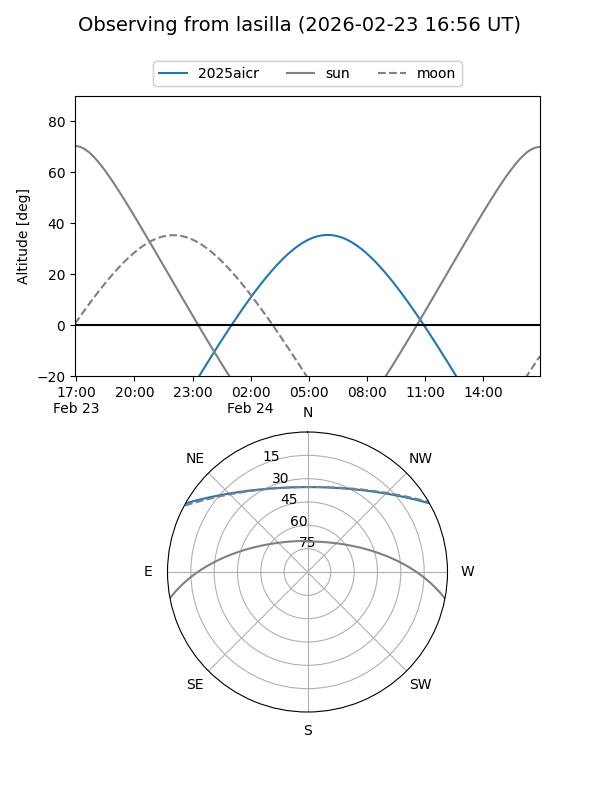
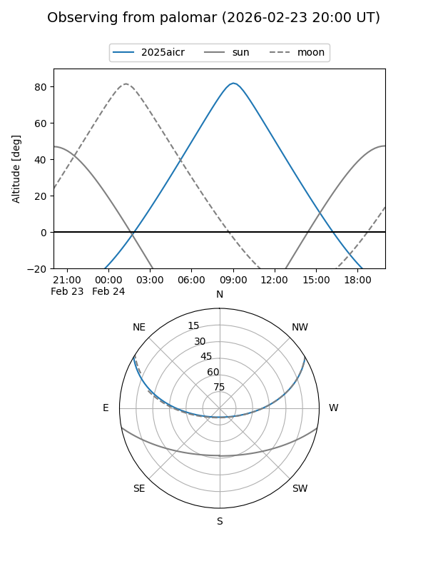
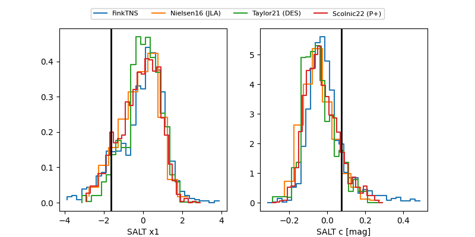

2025aicr
Target 2025aicr at 2025-12-31 17:00
Aliases and brokers:
FINK:
Lasair:
ALeRCE:
TNS:
YSE:
alt names
ZTF25acjptru (ztf,fink_ztf)
2025aicr (tns,yse)
Coordinates:
equatorial (ra, dec) = 172.7020,+25.46837
equatorial (HMS+DMS) = 11:30:48.49,+25:28:06.13
galactic (l, b) = (213.6227,+71.87227)
Flags:
Photometry:
last ztfg=20.08, ztfr=19.81
2 ztfg, 1 ztfr detections
Lightcurve

Visibility


Additional plots
